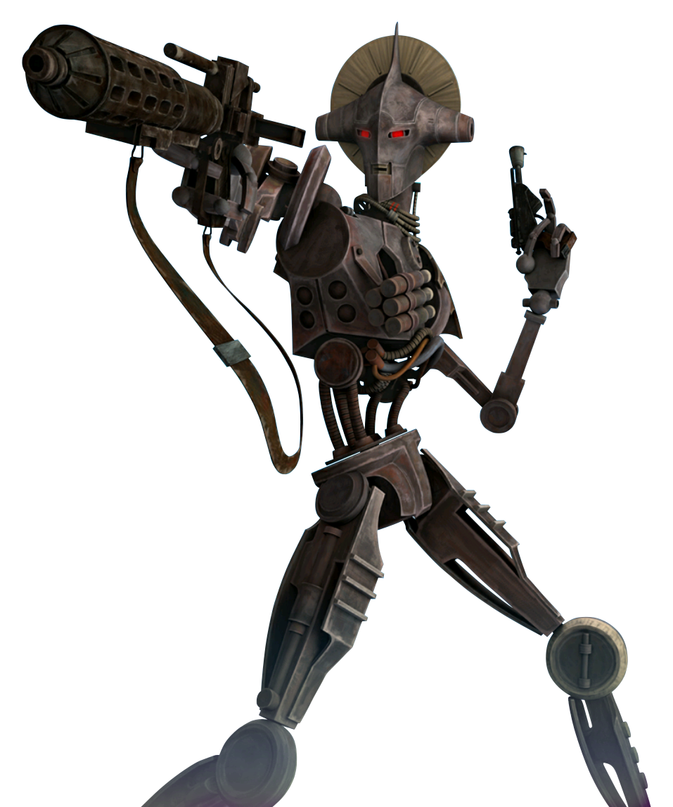

Droid
droid
Special Abilities: Droids do not need to eat, sleep, or breathe, and are unaffected by toxins or poisons. Droids have a cybernetic implant cap of 6 instead of their Brawn rating. In addition, after selecting their career, a Droid Player Character may train one rank in six of the eight career skills (instead of the usual four). After selecting their first specialization, a Droid Player Character may train one rank in three of the four specialization skills (instead of the usual two).
Inorganic: Since droids are inorganic, they do not gain the benefits of recovering with a bacta tank, stimpack, or Medicine skill checks. Droids do recover naturally by resting, as their systems attempt self-repairs. Otherwise, droids need to be tended to with a Mechanics check, using the same difficulties and results of Medicine checks for organic beings. Emergency repair patches can be used to repair damage just like stimpacks are used on organic beings. Due to their resilient metallic construction, droids start the game with one rank in the Enduring talent .
Mechanical Being: Droids cannot become Force sensitive, nor acquire a Force Rating by any means. Droids cannot use Force powers, and also cannot be affected by mind-altering Force powers.
A typical fringer may ridicule his droid to no end, yet without it, he is usually lost. Droids serve a variety of roles on the fringe, including security and conflict resolution, surgery and medicine, mechanical repairs, construction, astrogation and piloting, and mechanical labor. While many of these droids have only rudimentary intelligence, some are capable of independent thought.
Creating droid characters is easy. Treat them as a separate species, with bonuses and abilities that reinforce their robotic natures. Players should be creative when coming up with their description, and also with how the droid uses its equipment. Instead of a droid wearing Laminate Armor, for example, it could have reinforced metal plates attached directly to its chassis, and instead of carrying a blaster pistol, it could have one built into its arm
The personality of a droid is a more delicate matter. The very fact that the droid is a Player Character means that it is self-aware and independent-minded (unless the player wants to play a character who is completely subservient to the surrounding biologicals, of course). Players who want to make a droid character should remember the droid's origins and try to incorporate elements of their original function into their personality, even if their droid character has taken on roles far beyond what he was originally programmed for. A traffic control droid, for example, may take up the career of a mechanic, but still grumble endlessly whenever his pilot colleague breaks local flight and traffic laws.
Droids manufacturers organize droids in five distinct classes based on their primary functions.
Class One (First-degree): Specializing in physical sciences, mathematics, and medicine, these droids are often highly intelligent intellectuals, but lacking in "common sense."
Class Two (Second-degree): Class Twos work in the engineering and technical fields such as repairs and astrogation. They are often well-liked due to their reasonable intelligence, non-threatening appearances, and quirky personalities.
Class Three (Third-degree): Class Three droids are often humanoid in appearance, as they are intended to work directly with organics. They are programmed for the social and service areas, such as interpretation, teaching, protocol, and diplomatic assistance.
Class Four (Fourth-degree): Class Fours are equipped with weaponry and designed for security, military training and operations, gladiatorial combat, and even assassination.
Class Five (Fifth-degree): Class Fives are simple labor units for a whole host of menial jobs, from sanitation to load-lifting. Many do not have enough cognition to be considered sentient.
Droids can be either fresh off the assembly line with standard physical and mechanical specifications, or be customized units that fit their owner's tastes
2-1B Surgical Droid (Genetech/lndustrial Automaton): The 2-1 B Surgical Droid is a highly intelligent and flexible thinker; as one would expect of a droid whose decisions involve life and death. Its rather ugly chassis hides a remarkably complex and flexible behavioral circuitry matrix, and the droids are intelligent and capable in equal measure.
3P0 Protocol Droids (Cybot Galactica): The 3P0 series of protocol droids are some of the most human-like automata ever developed—perfect for their assigned tasks as ambassadors, political aids, translators, and personal attaches. However, their advanced SyntheTech AA-1 verbobrains can sometimes develop neuroses or other "quirks."
IG Assassin Droids (Holowan Mechanicals): Culminating with the feared and deadly IG-88 model, the IC series is infamous as one of the most lethal assassin droids in the galaxy. IG droids rarely meet an opponent they cannot eliminate, and true to their humorless nature, they follow the instructions for a particular bounty to the letter
LE-VO Law Enforcement Droids (Rseikharhl Droid Group): The success of LE-VOs in deterring crime in the Rseikharhl sector has led to their adoption galaxy-wide as appropriate models for police assistance and private security. Their programming requires them to follow Imperial codes to the letter and only use force when absolutely necessary. Though they are hardly ever equipped with lethal weaponry, they know how to target a stun weapon for maximum effect.
LOM Protocol Droid (Industrial Automaton): The LOM series was Industrial Automaton's attempt to upset a market dominated by Cybot Galactica. IA attempted to make a protocol droid very similar to the 3P0 units but with an insectoid head to appeal to niche markets. However, bad PR from at least one unit's career as a jewel thief caused IA to scrap the line. Some of the remaining LOM droids do have a habit of developing interesting and unexpected personalities
R-Series Astromech Droids (Industrial Automaton): The wildly successful R-series ranges from the original and cumbersome Rl to the famous R2 unit and all the way to the soon-to-be-released R6. Aside from the Rl (which is more than two meters tall and works aboard capital ships), all of the R-series astromechs are roughly a meter or so tall, and designed to ride in sockets aboard snubfighters to perform astrogation calculations and allow hyperspace jumps. A wide variety of tools also make them decent repair droids.
The two factors that determine intelligent life, sentience (the ability to sense) and sapience (the wisdom that comes from self-awareness) are not qualities many ascribe to droids. Droids are built to feel neither pain nor emotion. However they function with a high intelligence that surpasses most biochemical minds, and over the years without a memory wipe, personality quirks and self-preservation often overshadow the droid's original programing. Does this mean that droids can develop sentience and sapience over a period of time? It is a question that remains without a universally accepted answer.
Droids do not typically wear clothing, and many items of equipment that organics would have to carry separately may actually be part of a droid's body. For this reason, droids are allowed to treat certain pieces of equipment differently than other characters. For example, if a droid purchases and wears armor, the player can simply say his character has upgraded armor plates on his body, or a reinforced outer covering. Likewise, he could have an upgraded verbobrain instead of a datapad, or an internal communications device instead of a comlink (although many droids do carry equipment such as datapads and comlinks).
Smugglers have long traded rumors of "droid worlds," where automatons and cyborgs govern a society of their own. Aside from such tall tales, droids do not have their own society, instead laboring within the society of their human and non-human masters. Unless a droid's personality has reprogrammed its cognitive faculties, droids are built to obey, and they do.
However, the droids played by PCs present a special case. Over the millennia there have been countless examples of droids that have transcended their original programming to become self-aware and self operating. Some of these automata last for hundreds of years, repairing and upgrading themselves to remain at peak efficiency.
Some of these droids take pride and satisfaction in continuing to do the jobs they were designed for as well as possible, such as an R2 unit that constantly works to become a better pilot and astrogator. Others break with their programming entirely and choose new enterprises to pursue. The infamous 4-LOM started out life as a protocol droid, before becoming a jewel thief and eventually one of the galaxy's most well-known bounty hunters.
Droids from all classes operate with smugglers and criminal groups in the Outer Rim, where there are those who are willing to overlook their mechanical nature and respect a fellow fringer with a valuable skill set. Some bear their original design without modification, while other units are cleverly disguised in other bodies, such as the Cybot Galactica protocol series. And there are a handful of droids like the pirate lord ZI-ZO who have taken business into their own hands, finding it more efficient to lead than serve.